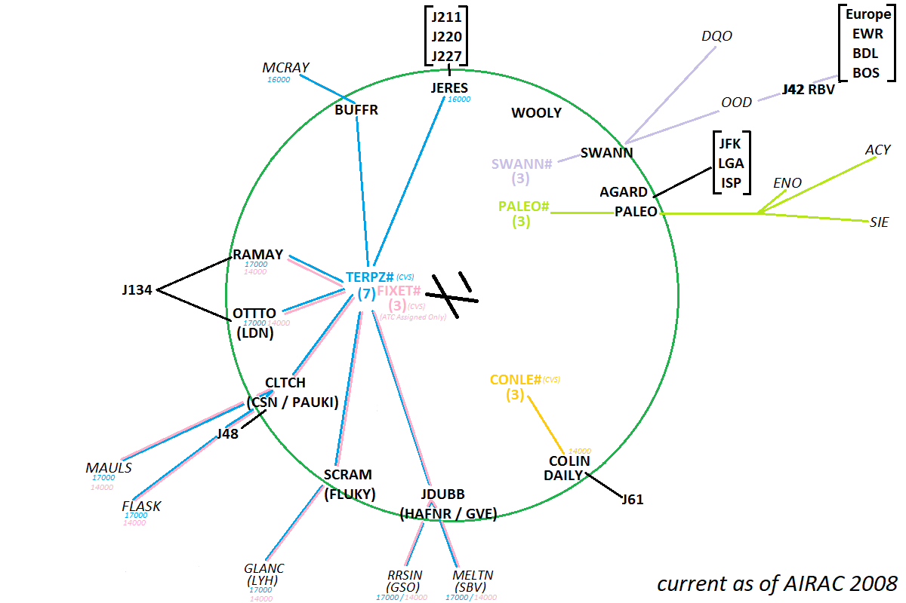
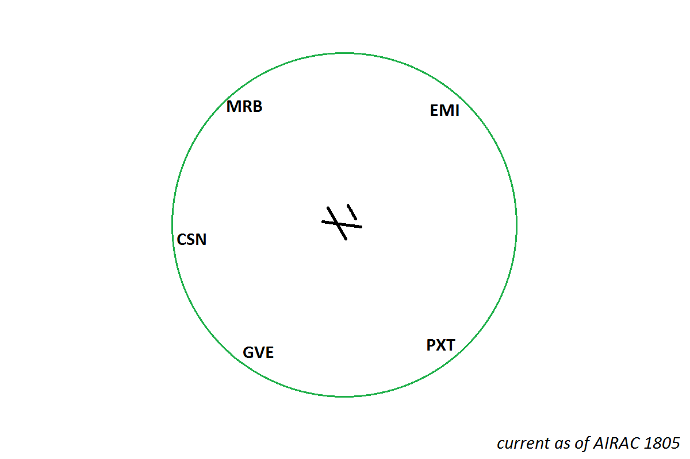

POTOMAC CONSOLIDATED TRACON -- SPECIAL ROUTE RESTRICTIONS
- New England / Europe -- SWANN BROSS Q419
- EWR, TEB, LGA -- max cruise FL210
- JFK -- max cruise 17,000
- ORF -- max cruise 10,000 (prop) or 14,000 (jet)
- RIC -- max cruise 10,000 (prop) or 14,000 (jet)
- PHL -- max cruise 7,000 (prop) or 11,000 (jet)
- between BWI, DCA, IAD, HEF -- radar vectors direct, maintain 4,000
- BWI to MTN -- radar vectors direct, maintain 3,000
BALTIMORE HI DEPARTURE GATES

BALTIMORE LO DEPARTURE GATES

BALTIMORE INITIAL ALTITUDES
NOTES:
- Initial headings are not included in IFR clearances at BWI and are all handled by Tower with takeoff clearance.
- FIXET# SID is ATC-assigned only; aircraft filing it should be redirected to the TERPZ# SID. For all intents, FIXET# is not used on VATSIM.
| Flight Rules |
SID |
Aircraft Category |
Cleared Initial Altitude |
| IFR |
CONLE#, TERPZ# |
jet |
climb via SID |
| PALEO#, SWANN#, or none |
all |
4,000 |
| VFR |
(n/a) |
jet, turboprop |
at or below 3,500 |
| prop, helicopter |
at or below 2,000 |